Файлы (file.tar.gz, image.png и другие) были загружены в репозиторий GitHub, после чего размещены на веб-сервере в каталоге /BackendTask2/files. Проверена доступность файлов через браузер учебного домена.
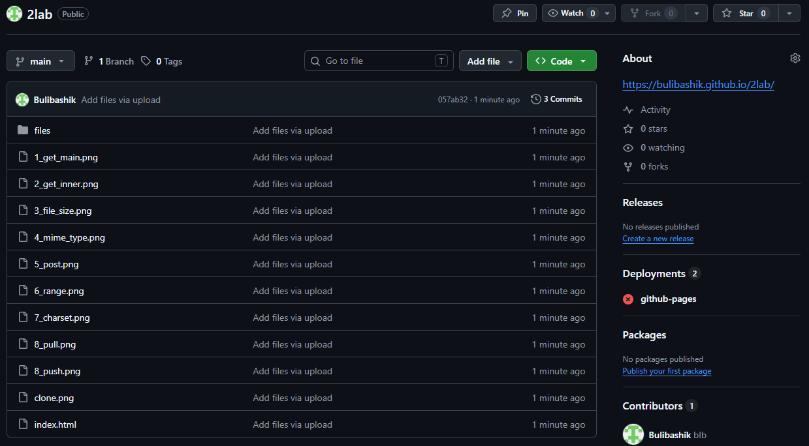
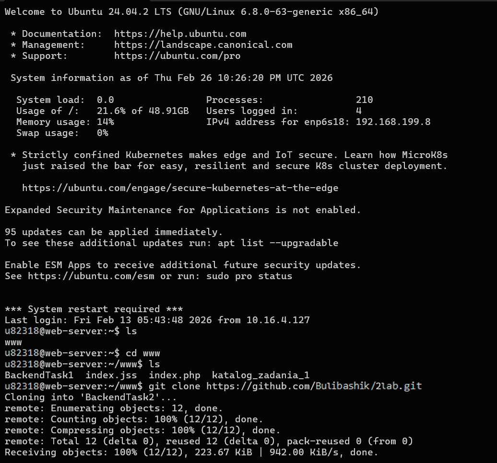
Отправлен HTTP-запрос GET к главной странице сервера с использованием протокола HTTP/1.0
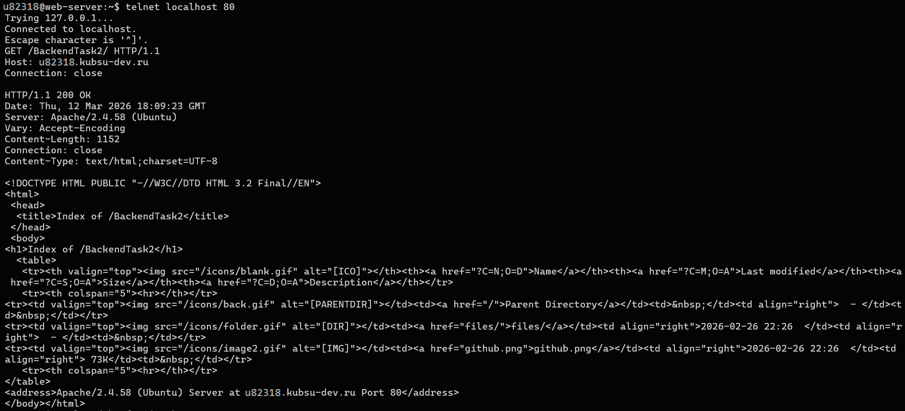
Выполнен GET-запрос к внутренней странице сайта с использованием HTTP/1.1 и указанием заголовка Host.
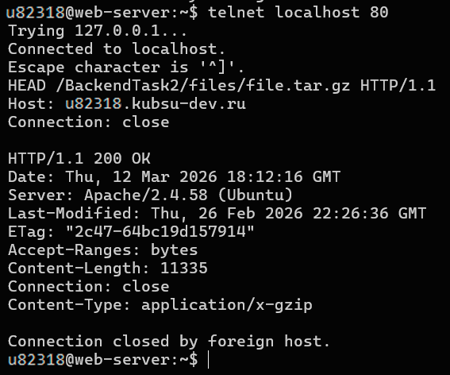
С помощью метода HEAD получены заголовки ответа сервера, включая Content-Length, определяющий размер файла file.tar.gz.
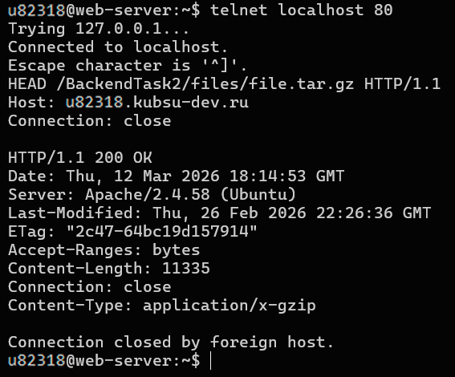
Отправлен HEAD-запрос к ресурсу image.png для определения типа содержимого (Content-Type).
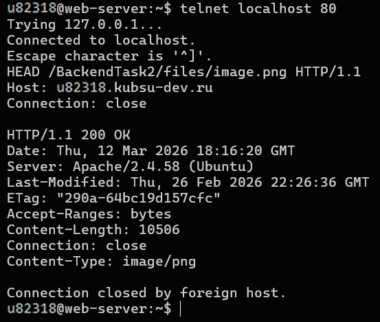
Выполнен POST-запрос с передачей данных формы (application/x-www-form-urlencoded) на скрипт index.php через telnet.
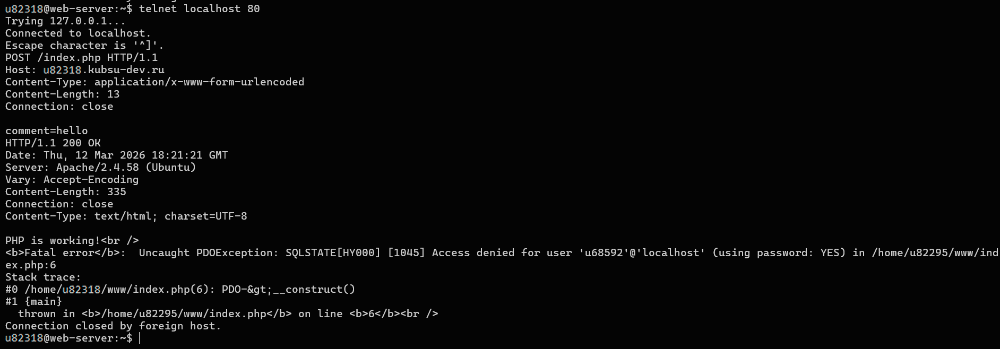
Использован заголовок Range (bytes=0-99) для получения первых 100 байт файла без полной загрузки ресурса.
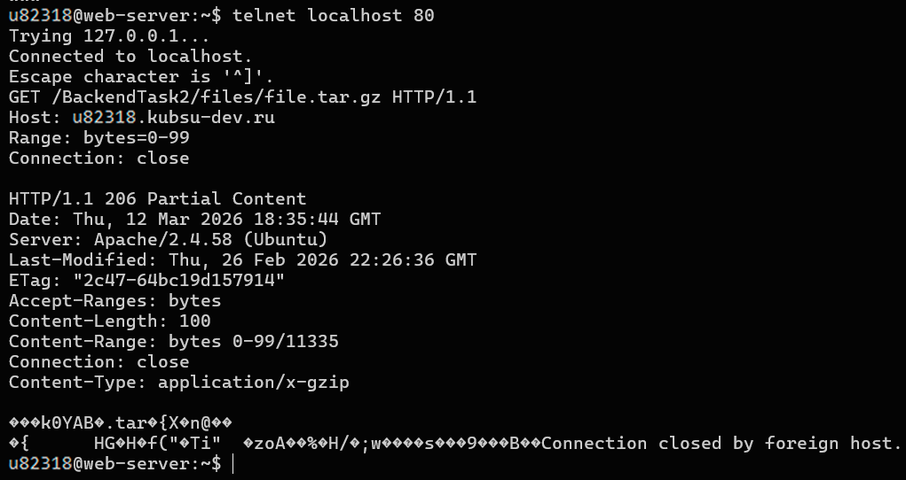
С помощью метода HEAD определена кодировка страницы по заголовку Content-Type (charset).
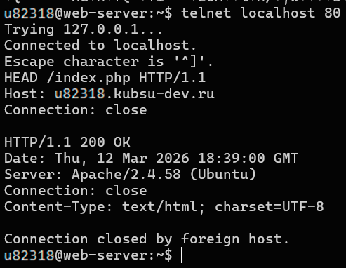
После выполнения задания все изменения были сохранены в локальном репозитории Git. Файлы со скриншотами и HTML-страницей были добавлены в индекс, после чего создан коммит и выполнена отправка изменений в удалённый репозиторий GitHub.
Для обновления файлов на сервере был выполнен pull из удалённого репозитория.
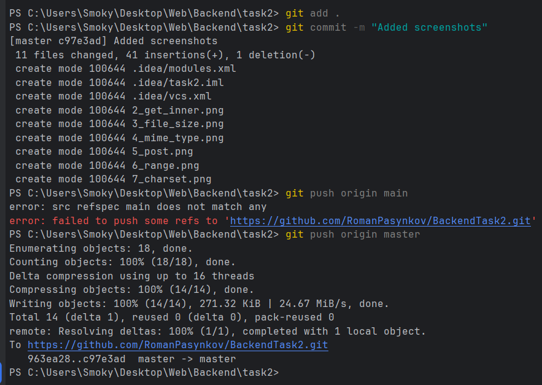
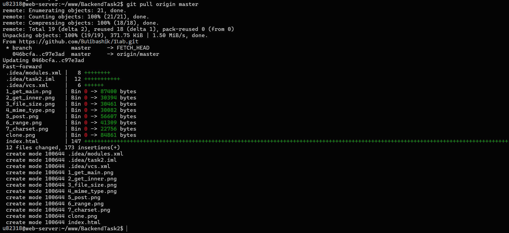